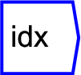
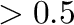
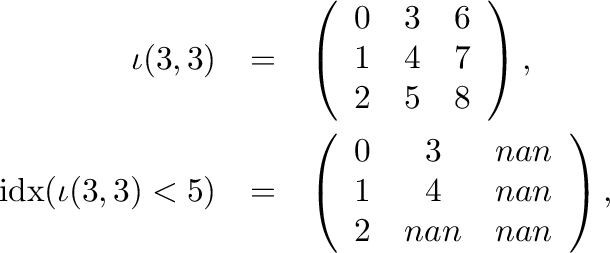

The operator can be placed on the canvas in two ways:
 ;
or
;
or

). For example, where

Note that the output array has the same shape as the input, with unused values padded with NANs (missing value).
Dimension and argument parameters are unused.